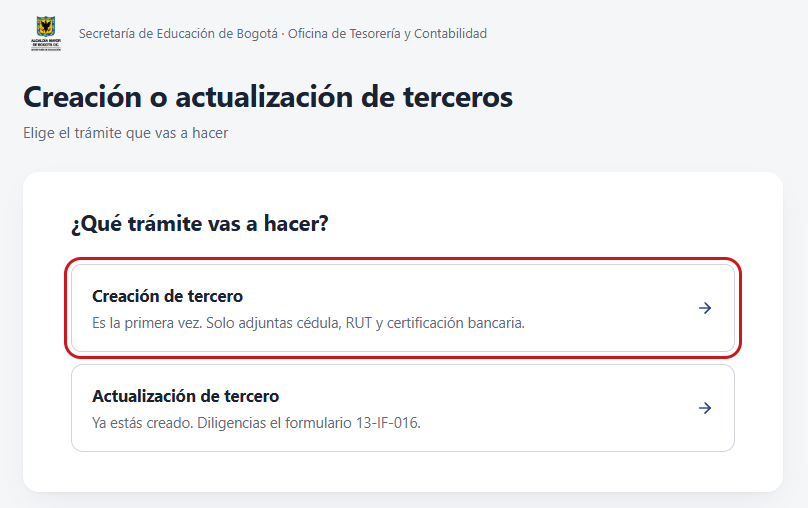
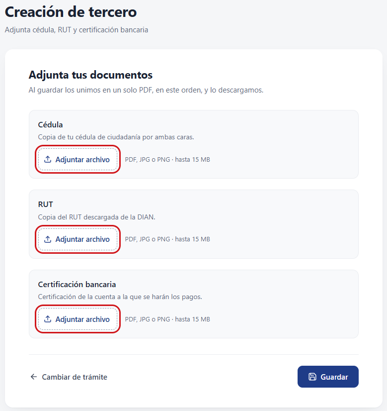
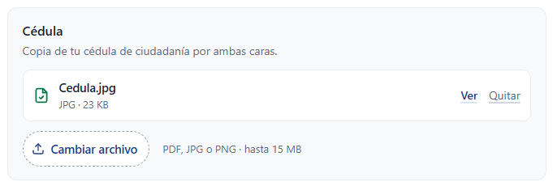
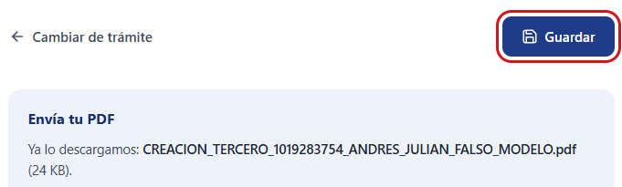
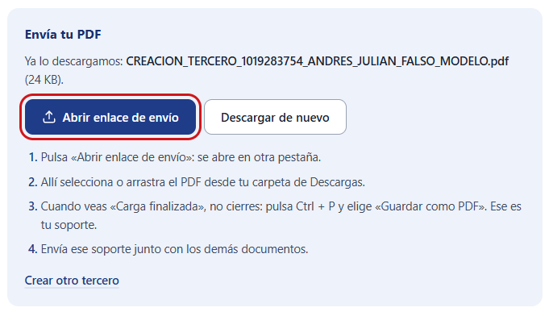
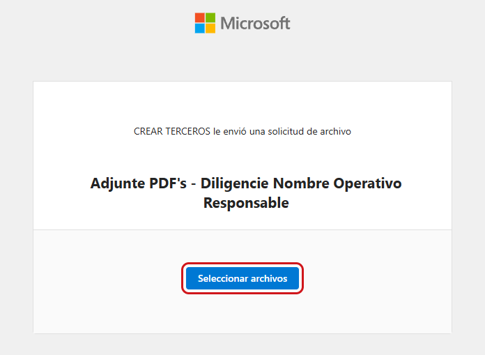

En 6 pasos envías tus documentos para la creación de tercero. Ten a la mano tu cédula, tu RUT y tu certificación bancaria, en PDF, JPG o PNG (máximo 15 MB cada uno). Cada documento va en un solo archivo y sin contraseña.
Abre el archivo Creacion o actualizacion de terceros.html y pulsa Creación de tercero.

En cada recuadro pulsa Adjuntar archivo y elige el documento, en este orden: cédula, RUT y certificación bancaria.

Cuando adjuntas un documento ves su nombre. Si te equivocaste, pulsa Cambiar archivo o Quitar.

Pulsa Guardar. Tus tres documentos se unen en un solo PDF, que queda en tu carpeta de Descargas con el nombre CREACION_TERCERO_ seguido de tu NIT y tu nombre.
Si falta un documento, su recuadro se marca con «Adjunta este documento para continuar».

Pulsa Abrir enlace de envío. En la pestaña que se abre, pulsa Seleccionar archivos, elige tu PDF de Descargas y sigue las indicaciones hasta ver Carga finalizada.


La página dice «Adjunte PDF's - Diligencie Nombre Operativo Responsable»: ahí va tu PDF con los tres documentos. Cuando te pida un nombre, escribe el de tu operativo responsable.
Cuando veas Carga finalizada, no cierres la página:
Envía ese PDF junto con los demás documentos. Es la prueba de que ya cargaste tu información.